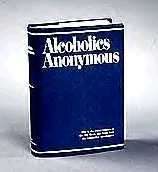

AA meeting schedule for Upstate NY.
AA meeting schedule for Upstate NY.

Introduction
By way of introduction, let me to quote from the official statement, "What is AA?"
Quoting from Prevalence of alcohol use disorders in Deaf psychiatric patients by Bruce Davidson, Colin Drummond, Helen Miller, Peta Land, Sylvia Kenneth from National Deaf Services, Springfield Hospital & St George’s University of London:
On the other hand, The Alcohol and Drug Council of Middle Tennessee | Deaf & Hard of Hearing Services says:
At any rate, you may be called upon to interpret for AA meetings, and you need to have information that will help you decide if you want to accept such assignments and how best to prepare for them.
Types of meetings
Here is AA's description of the two major kinds of meetings:
OPEN MEETINGS: As the term suggests, meetings of this type are open to alcoholics and their families and to anyone interested in solving a personal drinking problem or helping someone else to solve such a problem.
During the meeting there is usually a period for local A.A. announcements, and a treasurer passes the hat to defray costs of the meeting hall, literature, and incidental expenses. The meeting adjourns, often followed by informal visiting over coffee or other light refreshments.
Guests at A.A. open meetings are reminded that any opinions or interpretations they may hear are solely those of the speaker involved. All members are free to interpret the recovery program in their own terms, but none can speak for the local group or for A.A. as a whole.
CLOSED MEETINGS: These meetings are limited to alcoholics. They provide an opportunity for members to share with one another on problems related to drinking patterns and attempts to achieve stable sobriety. They also permit detailed discussion of various elements in the recovery program.
One way to determine if you are willing to interpret for an AA meeting (or other 12 Step Programs) is to attend an open meeting, but not a closed one. Look in the phone book to contact the Head Office or Local Chapter of AA or on-line to find out where AA meets in your area. You can also look on-line for interpreted meetings, but you should ask the interpreter for permission to observe them. You don't have to self-consciously explain to anyone at the meeting that you are not an alcoholic. You will probably be approached by someone, since AA feels outreach is important. When you speak with that person, you can say that you are interested in the possibility of interpreting for meetings, if you feel you need to say that, but otherwise, just be friendly as you would be to anyone, anyplace that approaches to welcome you.
At an AA meeting, they may break after a few minutes to allow those that are interested to go to a side room for a First Step meeting. This is a meeting for beginners, whose format may vary. Although I have interpreted for around 300 meetings, I have rarely interpreted for a First Step, so it probably won't happen often for you as an interpreter.
Another alcohol-related assignment you may be offered is a Treatment Center where the client is subjected to an intensive and often court-appointed time period to work on their alcohol problem. At this point I should mention that AA and many others feel that alcohol is a drug, so there is not a lot of different between the two addictions, except that the drugs used are usually illegal (although abusing prescription drugs happens). Some 12 Step meetings are specialized: for women only, for men, for young people, for GLBT. Not only is your comfort level important, but that of the members.
People can also be addicted to eating, shopping, gambling, sex, and the like. 12 Step programs, modeled after the 12 Steps of AA, are often used for these addictions. People in AA meetings are usually discouraged from talking too much about drugs other than alcohol, because a person who has not yet committed to following the AA program may feel that their drinking does not involve an illegal substance and rationalize their way out of listening to what is being said.
Format and setting of meetings
We will describe an AA meeting as a prototype. Meetings are often held in a church basement or side room. There is a coffee area, a front table at the opposite end and chairs set-up in rows. At the front table will sit the chairperson, a speaker, and a secretary, among others. There is a greeter at the door and an area with pamphlets and books on the program. The meeting will start with silence, then the serenity prayer, readings, and a call for visitors and first-timers. Announcements will be made about visits to treatment centers and prisons, anniversaries of members.
Chips (coins, tokens) are awarded to members who have been sober/clean for a variety of different time periods with applause and a hug. If it is a speaker's meeting, the speaker will tell the story of his or her journey to sobriety. Afterwards there is a call for a topic or someone who still wants to take a drink. Members in the audience will share their comments, and the meeting will close after an hour will the members forming a standing circle, joining hands and with the recitation of something like the Lord's Prayer or the Statement of Unity.
Frozen texts
The opening and closing of the meeting involve reading texts. When speech is a long quotation that is done as part of a ritual, this is called frozen register. To read more about this concept see Frozen register and the translation process from English to ASL. This presents a challenge for several reasons: (1) repetition as part of ritual has its impact from being exactly the same each time, but spontaneous interpretation can vary, (2) people read texts much faster than their natural speech rate, especially if they are familiar with it, (3) some people don't read loudly or clearly enough, (4) written English has a different pattern than spoken English and sounds "funny". It is therefore a good idea to translate these texts onto paper and practice them. Also print out a copy of the English text so that if you have difficulty hearing or parsing you can look at your copy. If a Deaf member is asked to do one of the readings and signs or reads them in a voice difficult to understand, you can do the same. Here is the usual order of the texts and links to my translation of these, which you may find helpful:
How it works (includes The Steps)
The Lord's prayer (closing) Some members say "our daily strength," instead of "our daily bread."
Terminology
Here are some commonly used words and phrases, their definitions, and how to deal with them in ASL. See Glossing system used for technical signs.
This house is run and controlled by law enforcement and funded by the government. There are strict rules you must abide by or you risk being thrown out or sent someplace else. The rules may not be the same for every house, but they are the same rules for all that are there.
You are expected to work and improve your situation or stay until law enforcement has relocated you, depending on your situation. There are no unprescribed drugs allowed and those prescribed are to be handed over to the head of the house to be given to you in doses. No alcohol and no over night guest. Sex also isn't allowed." From What is a halfway house?
Here are some slogans, with an explanation in English and a suggested way to convey them in ASL. If would not hurt to use ASL to explain the meaning of the phrase as I have explained it in English if you know that one of the Deaf people is a newcomer. You could start with more of a transliteration and then contextualize to the extent that you have time and processing ability.
Benefits and drawbacks of interpreting for AA
Benefits:
Interpreting a meeting can be irritating because of cross-talk, but this is not allowed at an AA meeting. There is a sense of spirituality, that is a focus on trying to overcome physical limitation and follow an inner voice that says change is necessary. Members tell stories that may have a similar structure, but are often fascinating in the stubbornness of denial and the victory of acceptance. It is possible to learn many lessons that are beneficial even for the non-addict. The sense of comradery is infectious. The format of the meeting is highly predictable, although there are sometimes interesting surprises. The language used by participants ranges from higher registers to sometimes incoherent, but often offer interesting challenges as people talk about topics and use expressions that we don't often encounter in other settings. This can be seen as a benefit and a drawback.
Drawbacks:
Frozen texts are densely packed with concepts that the interpreter may not be familiar with. Texts are often read quickly, sometimes haltingly and too softly. During the recounting of a member's experience, his/her voice may be damaged by alcohol or altered by strong emotions. His/her logic may be distorted by alcohol, making it more difficult to parse and process. The message may hit close to home if an interpreter is an addict or related to one. A wide range of emotions, occasional bad language, and a high context culture make it a challenge to find equivalence in the target language, or may cause internal noise. Suggestions for how to deal with these drawbacks as well as other challenges are made below. In some instances the interpreter is paid from money that is collected during the meeting and is usually less that you would expect for your usual hour's work. The satisfaction you get from doing work that may be saving someone's life will have to make up the difference.
How to handle challenges
Any challenge can be see as an opportunity for growth, and since we hopefully strive for lifelong learning, we should monitor our progress in dealing with these challenges. Sort out which make for the biggest obstacles to conveying the message and work on them, bit by bit. If the challenges are insurmountable, the interpreter may choose to opt out of 12 Step interpreting.
The first challenge that will strike the interpreters, chronologically is dealing with the texts that are read out loud by the members. They are dense and sometimes read quickly, haltingly or softly. Also a Deaf member may be asked to sign one of them. I think it is helpful for you to write out your own translation of these and practice them a few times before you do it live. Your translation will change over time as you come to understand The Program better and try your translation on for size. I have included links to my translations above, as you have seen. Keep a copy of the English with you as well, so that when a Deaf person signs it you can read the original.
The density of the read texts and of the slogans you will hear is from the fact that you may be unfamiliar with 12 Step concepts. I have offered suggestions for how to convey them. I think this should be a good start. It is good to understand alcoholism, its symptoms, and consequences, so reading 12 Step literature will help. Prep will aid you in closure on missed words when voices are soft, damaged by drugs, filled with emotion, or too soft. A member's logic may be distorted by alcohol, making it more difficult to parse and process.
Any setting, as well as our state of being, can cause Internal noise. In addition, the message may hit close to home about ourselves or our loved ones. There is occasional bad language, a wide range of emotions, and the Deaf member may find it hard to look at you early in his/her sobriety. It may be hard to keep our composure when members laugh at serious stories, because they've been there. You may be asked if you are in the program. Some people question if a non-alcoholic interpreter should be in a closed meeting. The impact from all of this can be lessened if we ourselves "let go and let God." You are human; do your best. This is a challenging environment. Congratulate yourself as you grow. If it is beyond you, discretion may force you to leave. "Don't regret the past or shut the door on it."
Deaf members also have a number of challenges. It is hard to find interpreters to do this work, and like K-12 settings and religious settings, all three of which I feel should have the top interpreters in that area, it is rarely so. It may be difficult for the Deaf person to look at you the interpreter because of shame or denial. This is hard on the Deaf person, too! When you see that the consumer wants to have a turn, use your own voice to handle it the way others do in the meeting. If people just chime in when there is an appropriate pause, do the same. Deaf people may avoid specific meetings or going to any meeting at all because of grapevine fear: They fear that they will be outed by other Deaf people that are there. Be sensitive to all of this.
Parting advice
This is not the place for a "9 to 5" attitude. Come early and stay late. Ask the Deaf members if they want to talk to any of the hearing members. Be a resource person to the Deaf consumer about what material and websites are available to them as listed below. Know the terminology. Stand in the circle for the closing. If no Deaf person shows up at first, stay for the ENTIRE meeting. I have had Deaf people show up 30 to 45 minutes late for whatever reason. I am serious when I say you may save that person's life, for at least one more day.
Some excellent ideas from my dear friend and colleague Monica Coppola:
AA meeting schedule for Upstate NY.
About.com. Deaf Health - Drug and Substance Abuse - Deaf People.
Addiction Help! - e-Michigan Deaf and Hard of Hearing.
Addiction Recovery Guide chat room.
Adult Child and Co-Dependency Center.
Alcoholic Movie Reviews. A painless way to learn more about alcohlism.
Alcoholics Anonymous. The official website.
Alexander, T.
 DiNitto, D., & Tidblom, I. (2005, April). Screening for Alcohol and Other Drug Use Problems Among the Deaf Among the Deaf. Alcoholism Treatment Quarterly, Volume 23, Number 1, 6 April 2005 , pp. 63-78 (16). Haworth Press. Abstract: No alcohol and other drug screening or diagnostic instruments have been validated for Deaf populations, although screening tools exist in other languages, such as Spanish. Deaf individuals traditionally have had difficulty understanding tests created for hearing populations because they contain wording or phrases that are unfamiliar in Deaf culture. The purpose of this study was to lay the groundwork for developing a culturally relevant alcohol and other drug screening instrument for Deaf individuals. Deaf individuals were asked about their understanding of items from two widely-used screening instruments, the CAGE and the AUDIT, which were developed for hearing individuals. Deaf participants reported difficulty with both instruments, with some words problematic for 88 of participants. Providers using these instruments should be aware of their limitations when used with Deaf individuals.
DiNitto, D., & Tidblom, I. (2005, April). Screening for Alcohol and Other Drug Use Problems Among the Deaf Among the Deaf. Alcoholism Treatment Quarterly, Volume 23, Number 1, 6 April 2005 , pp. 63-78 (16). Haworth Press. Abstract: No alcohol and other drug screening or diagnostic instruments have been validated for Deaf populations, although screening tools exist in other languages, such as Spanish. Deaf individuals traditionally have had difficulty understanding tests created for hearing populations because they contain wording or phrases that are unfamiliar in Deaf culture. The purpose of this study was to lay the groundwork for developing a culturally relevant alcohol and other drug screening instrument for Deaf individuals. Deaf individuals were asked about their understanding of items from two widely-used screening instruments, the CAGE and the AUDIT, which were developed for hearing individuals. Deaf participants reported difficulty with both instruments, with some words problematic for 88 of participants. Providers using these instruments should be aware of their limitations when used with Deaf individuals.
Anixter Center, Addiction Center of the Deaf.
argot .com : dictionary of street drug (cannabis, marijuana, heroin, cocaine, et al.) slang.
Betty G. Miller | Biographies. Betty G. Miller is both a professional visual artist, and a professional counselor working in the field of alcohol and drug abuse with deaf and hard of hearing people. She holds an Ed.D. in art education from Penn State University; and is a certified alcohol and drug counselor (C.A.D.C., a certification formerly known as C.A.C., clinical alcohol counselor).
Big Book concordance. Electronic version. An index to every significant word in the Big Book, "Alcoholics Anonymous" (3d edition): 9,902 Words; 66,576 References; 447 references to alcoholism; 169 references to sobriety; 63 references to acceptance; 19 references to sponsorship; 17 references to serenity and much, much more . . .
Big Book website. A copy of the The Big Book, the central text of AA, on line.
Cheever, S. Bill Wilson. From the rubble of a wasted life, he overcame alcoholism and founded the 12-step program that has helped millions of others do the same.
Communication Service for the Deaf. (2004, March 31). Learn How Alcohol Affects Your Health On National Alcohol Screening Day.
Crawford, A. (1997). Alcohol, auditory functioning and deafness. Addiction Biology 2 (2), 125–150. Abstract This paper reviews studies of alcohol and auditory impairment and the treatment of deaf people with alcohol problems and concludes that: (a) alcohol affects auditory functioning, (b) prenatal exposure to alcohol is a risk factor for hearing impairment in FAS children, (c) there may be genetic factors involved in the transmission of auditory abnormalities to the children of problem drinkers and (d) there is very little research in the drinking patterns of or counselling services for deaf people in the UK.
Deaf and Hard of Hearing AA 12 step recovery resources. ASL Videotapes, Closed Captioned Videotapes, Easy-To-Read Literature, Miscellaneous, AA Guidelines, Service Material, Literature Catalogs, Ordering Information, AA Meetings In Print.
Deaf Info - alcohol and drug use.
Deaf Literature Abuse and Substance Abuse.
Deaf Vlog/Blog: Alternative Solutions Center (ASC). (2006, December 6). The Cool Factor: Parents of Deaf Teens and Alcohol.
Drug Data Update: Friday Focus: Drug Education for Young Deaf People.
e-AA group of Alcoholics Anonymous.
GCATTC Announcements. Drug and Alcohol Assessment for the Deaf. This is the first ASL video to screen the Deaf for drugs and alcohol abuse. Created with input from Deafness experts and the Deaf community, this screening has been shown to have good reliability and validity. Contents include: Start-up information, FAQ about the DAAD, Answer Sheet, and Psychometrics of the DAAD.
Independence First. Wisconsin Alcohol and Other Drug Abuse Project. The AODA Project Coordinator provides FREE outreach and education to AODA treatment providers/peer support recovery groups about the needs of the Deaf, Deaf-Blind and Hard of Hearing population in Wisconsin and how to better serve them. The Project Coordinator also conducts outreach and education to this targeted population to encourage their participation in AODA treatment. Depending on the circumstances, the Project Coordinator can also assist in obtaining sign language interpreters, use of assistive listening devices or printed materials produced in large print for individuals with low vision.
imajesusgeek. (2006, October 28). D.E.A.F. A deaf man's struggle with his deafness, alcoholism and faith.
A deaf man's struggle with his deafness, alcoholism and faith.
Information on Alcoholics Anonymous. Short and informative.
Join Together. (2005, July 15). Widely Used Alcohol Screening Instruments Confusing to Deaf Persons. Deaf persons have difficulty understanding questions on traditional alcohol screening instruments, according to a recent Texas study.
Deaf persons recruited from San Antonio and Austin were asked to read the CAGE and the Alcohol Use Disorders Identification Test (AUDIT), two instruments widely used to screen for alcohol problems. Deaf individuals reported difficulty understanding not only individual words and phrases in both instruments, but also entire questions -- even after being shown corresponding American Sign Language (ASL) signs for words or phrases within the question.
Kirkpatrick. K. E. J. (10 December 1999). Interpreting AA (and other 12-step) meetings. Research was done through observations, interviews with members, both hearing and Deaf, interviews with interpreters who work in this setting, and through collecting and reading related literature. I interviewed both male and female interpreters who are also members. Both of them seemed to expect direct, focused questions, and they did not go into more detail or offer any more information than what was requested in the question.
Miller, B. G. (1998, November). Deaf and Sober: Journeys through Recovery. National Association of the Deaf. ISBN-13: 9780913072868.
Minnesota Chemical Dependency Program for the Deaf. See especially "Program Articles" and "Program Materials".
Moore, D. (1987, April). Handicapped Adolescent Alcohol and Drug Use/Abuse: Some Causes for Concern. Abstract: The paper examines the literature concerning drug and alcohol abuse among handicapped adolescents. An introductory section noting the relative lack of research on this problem is followed by a review of adolescent drug research identifying longitudinal studies involving more than 70,000 subjects, studies of associated personality variables, and studies of drug abuse among young adults. Studies on handicapped youth and drug use are then reviewed with emphasis on alcohol abuse among the deaf, alcohol abuse among mentally retarded adults, and hyperactive teenagers and alcohol consumption. Special considerations that make drugs particularly hazardous for the disabled include: health risks, drug potentiation, predisposition to mental health problems, relative immaturity and unsophisticated use, peer pressure, thrill seeking behavior, and fantasizing. The nature of special education settings themselves, in their acceptance of deviance and socially retarded behaviors, may contribute in an indirect way to drug use. Finally discussed are the possibly higher prevalence of casual alcohol or drug use among the handicapped than nonhandicapped populations and the possible predisposition to abuse of the disabled. (DB)
Nebraska Commisson for the Deaf and Hard of Hearing. Alcohol Anonymous (AA) Meetings Interpreted for the Deaf.
NorCal Center on Deafness, Inc - Thursday, January 3, 2008. True Biz “Serious Talk”. An Alcohol and Drug Prevention Education targeting Deaf & Hard of Hearing Youth and Adults and their families. Alcohol and Drug Prevention Program
Middle and High School Workshop Series for deaf and hard of hearing students on topics such as: Decision-making, Assertive Communication, Goal Setting, Positive Relationships, Managing Emotions. Elementary School presentation and activities for deaf and hard of hearing students (K-6).
Secular Organizations for Sobriety (SOS).
Serving Alcoholics With Special Needs. While there are no special A.A. members, many members have special needs. For the purpose of those Guidelines, we define A.A.s with special needs as persons who are blind or visually impaired; deaf or hard of hearing; chronically ill or homebound, and those who are developmentally disabled.
Sounds of Sobriety Online AA Group.
Substance and Alcohol Intervention Services for the Deaf.
The Alcohol and Drug Council of Middle Tennessee | Deaf & Hard of Hearing Services. The Deaf and Hard of Hearing program services are designed to prevent the use of alcohol, tobacco, and other drugs among deaf and hard of hearing individuals, from kindergarten through 12th grade. The Deaf program works with students onsite, whether in the schools or with their families in the home to teach them sign language. Improved communication through signing opens up new realms of understanding for the child and the parent.
The Big Book Online (the book itself).
The Minnesota Chemical Dependency Program for
Deaf and Hard of Hearing Individuals is an inpatient chemical dependency program located within the University of Minnesota Medical Center, Fairview, at the Riverside campus in Minneapolis, Minnesota. Specialized in treatment for Deaf and Hard of Hearing persons, The Program has been providing services nationally since 1989.
University of California Center on Deafness. Deaf Drug and Alcohol
Recovery Services (DDARS).
Whitehouse, A., Sherman, R. E., and Kozlowski, K. (1991, March). The needs of deaf substance abusers in Illinois. American Journal of Drug and Alcohol Abuse. Only recently have hearing-impaired substance abusers been acknowledged as needing attention. Recent literature searchers of several databases (including U.S. government documents) yielded only four dozen articles in this topic area, approximately 50% of which were misclassified, i.e., these articles dealt with hearing impairment which was due to substance abuse. It was not until the late 1970s that articles began to appear regarding substance abuse within the deaf population.
Woodward, J. (1979). Signs of drug use. T.J. Publishers. 82 pages, soft cover. Text has over 160 signs related to drug and alcohol use clearly illustrated, along with notes on the derivation of each sign. Has companion videotape.